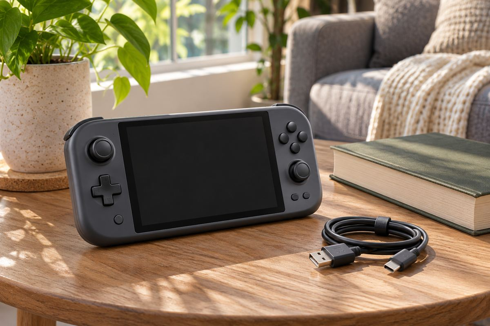

전자기기 / EXPLAINED
에이서 프레데터 아틀라스 8 판매권 확대…구성별로 다른 배터리와 저장 공간
5월 공개된 윈도우 휴대용 게임 PC가 독일과 미국 판매 단계에 들어갔다. 120Hz 화면과 게임 프레임은 따로 비교해야 한다.

에이서의 휴대용 게임 PC 프레데터 아틀라스 8이 유럽과 미국에서 판매 단계에 들어갔다. 에이서는 5월 28일 제품을 처음 공개하고, 독일 법인은 10월 26일 현지 판매와 1299유로부터의 권장가를 안내했다. 미국에서는 더 버지가 상위 인텔 아크 G3 익스트림 구성이 11월 1일부터 베스트바이에서 1299.99달러에 판매된다고 보도했다. 숫자만 비슷할 뿐 통화와 판매 시장, 구성 조건이 다르다. 5월은 제품 발표, 10월 말과 11월 초는 시장별 소매 판매 일정이다.
에이서는 노트북과 모니터 등을 만드는 대만 PC 업체다. 프레데터는 게임용 제품 브랜드다. 아틀라스 8은 윈도우 11 홈과 게임패드 조작부를 한 몸에 넣어 PC 게임을 손에 들고 실행하는 방식이다. 독일 공식 사양에는 인텔 아크 G3와 G3 익스트림, 각각의 B370·B390 그래픽 구성이 제시됐다. 제품 이름이 같아도 구매하려는 판매 페이지의 프로세서와 메모리, 저장 용량을 확인해야 비교가 성립한다.
화면은 8인치, 1920×1200 해상도의 IPS 터치 패널이며 최대 120Hz와 가변 주사율을 지원한다. 120Hz는 패널이 1초에 화면을 갱신할 수 있는 최대 횟수다. 게임이 매초 만들어 내는 프레임은 그래픽 설정과 전력 한도에 따라 달라진다. 가변 주사율은 패널의 갱신 시점을 프레임 출력에 맞추는 기술이라 화면이 어긋나 보이는 현상을 줄이는 데 쓰인다. 이 기능을 지원한다는 사양으로 특정 게임의 평균 프레임이나 배터리 상태에서의 성능을 산출할 수는 없다.
무게와 사용 시간의 기준
독일 사양은 배터리 용량을 최대 80Wh로 안내하며, 80Wh 구성은 810g 미만, 60Wh 구성은 770g 미만으로 제시했다. Wh는 저장 에너지의 단위다. 같은 소비 전력으로 구동한다면 큰 배터리에서 더 오래 쓸 수 있지만, 실제 소비 전력은 게임 부하, 밝기, 무선 연결과 냉각 동작에 따라 바뀐다. 무게 역시 배터리 구성이 달라지면 달라진다. 제품군의 가장 가벼운 무게와 가장 큰 용량을 한 모델의 사양처럼 묶으면 잘못된 비교가 된다.
공식 제품군은 메모리 최대 24GB와 SSD 최대 1TB를 안내한다. ‘최대’라는 표현은 모든 SKU가 그 용량을 갖췄다는 뜻이 아니다. 또한 두 개의 썬더볼트 4 단자는 독이나 외부 화면을 연결하는 데 쓸 수 있다. 편집부가 주목한 부분은 휴대 모드와 탁상 모드의 비교 기준이 다르다는 점이다. 들고 쓸 때는 무게와 손잡이, 배터리 시간이 중요하고, 독에 연결할 때는 디스플레이 출력과 충전 조건이 더 중요해진다.
보관할 게임 수가 걱정된다면 메모리와 SSD의 역할도 분리해서 볼 수 있다. 메모리는 실행 중인 프로그램과 그래픽 처리가 사용하는 공간이고, SSD는 설치 파일을 저장하는 장치다. SSD 용량이 큰 구성은 설치 여유가 늘지만 메모리 용량이나 게임 성능까지 같은 비율로 늘어나는 것은 아니다.
이번 자료에서 확인된 것은 제품군의 사양 범위와 일부 시장의 판매 일정이다. 국내 공식 가격과 출시일, 구성별 독립 성능·배터리 측정값은 이 발표에서 확인되지 않았다. 구매 검토 시 정확한 모델 번호와 배터리 용량, SSD 크기, 지역 보증을 먼저 맞춰 놓으면 같은 제품명 아래 섞여 있는 사양을 분리해서 볼 수 있다.